Resultados de aprendizaje y criterios de evaluacion que se evaluarán en esta unidad.
Resultados de aprendizaje de la unidad didáctica:
Criterios de evaluación de la unidad didáctica:
Sistema de evaluación y entregas en Aules (1 Cuestionario + 1 Único Documento PDF):
En esta unidad NO se entregan PDFs sueltos por cada apartado. Deberás crear desde el primer día un único documento en Word estructurado por apartados (del Apartado 6 al Apartado 15), ir insertando en él las 29 evidencias numeradas (Evidencia 1 a Evidencia 29) conforme avances en las prácticas y, al finalizar la unidad, exportarlo a un único fichero PDF para subirlo a Aules:
| Actividad en Aules | Criterios evaluados | Descripción y contenido | Entrega en Aules |
|---|---|---|---|
| 1. Cuestionario Teórico | RA3-CEa / RA6-CEa |
Comprensión teórica de protocolos FTP, FTPS, SFTP, SSH y modos Activo/Pasivo (Apartados 1 a 5). | *Cuestionario online en Aules (Sin subir archivo)* |
| 2. Memoria Práctica Completa de la Unidad | RA3-CEb..h / RA6-CEb..f |
Documento único con todos los apartados prácticos (Bloque Windows Server, Bloque Ubuntu Server y Bloque Inter-Servidores + Proyecto Final) incluyendo las Evidencias 1 a 29. | 1 único archivo PDF: RA3-RA6-FTP-SSH-NombreApellidos.pdf |
Guía de apartados que debe tener tu documento Word y qué evidencias incluye cada uno:
| Apartado en tu Word | Bloque | Criterios | Evidencias obligatorias del apartado |
|---|---|---|---|
| Apartado 6: Instalación de IIS FTP y OpenSSH en Windows Server | Windows Server | RA3-CEb,c,d |
Evidencias 1 a 7 (Instancia EC2, Security Group, RDP, usuario alumne_redes, modo pasivo IIS, sitio FTP-AULA y Firewall) |
| Apartado 7: Transferencia con FileZilla hacia Windows Server | Windows Server | RA3-CEe |
Evidencia 8 (Conexión pasiva en FileZilla y subida de Prova_ftp.txt) |
Apartado 8: Aislamiento de usuarios (LocalUser) y acceso anónimo |
Windows Server | RA3-CEd |
Evidencias 9 y 10 (Carpetas en LocalUser, vista aislada de usuari_ventas y error 550 en anonymous) |
| Apartado 9: Seguridad y cifrado FTPS (TLS/SSL) en Windows Server | Windows Server | RA3-CEf |
Evidencias 11 y 12 (Certificado autofirmado en IIS, huella SHA-256 en FileZilla y candado FTPS) |
| Apartado 10: Administración remota SSH con PuTTY y PuTTYgen | Windows Server | RA6-CEb,c,d |
Evidencias 13 y 14 (Generación de clave en PuTTYgen, login sin contraseña y rechazo tras bastionado) |
| Apartado 11: SFTP, SCP y Auditoría de Logs IIS y Wireshark | Windows Server | RA6-CEe / RA3-CEg |
Evidencias 15 a 18 (SFTP puerto 22 en FileZilla, scp en PowerShell, log W3C en Notepad y captura en Wireshark) |
Apartado 12: Instalación de vsftpd, modo pasivo y chroot en Ubuntu |
Ubuntu Server | RA3-CEb,c,d,e |
Evidencias 19 a 22 (Instancia Ubuntu_FTPSSH, /etc/vsftpd.conf, systemctl status vsftpd y FileZilla enjaulado) |
| Apartado 13: Seguridad FTPS (OpenSSL), SSH y Logs en Ubuntu | Ubuntu Server | RA3-CEf,g / RA6-CEf |
Evidencias 23 y 24 (Certificado OpenSSL + FTPS en FileZilla, y logs /var/log/vsftpd.log y auth.log) |
| Apartado 14: Pruebas cruzadas Inter-Servidores en AWS | Inter-Servidores | RA3-CEf / RA6-CEf |
Evidencias 25 y 26 (Transferencia curl y ssh desde Ubuntu a Windows, y desde Windows a Ubuntu) |
| Apartado 15: Proyecto Final (*TechCatadau S.L.*) y control de costes | Proyecto Final | RA3-CEh |
Evidencias 27 a 29 (4 departamentos en FileZilla, script backup_techcatadau.ps1 por SCP e instancias en estado Stopped) |
La transferencia de archivos en red es un servicio fundamental en cualquier infraestructura informática que permite el intercambio de ficheros entre ordenadores a través de una red local o de Internet.
El protocolo estándar tradicional para esta función es FTP (File Transfer Protocol), diseñado según la arquitectura cliente-servidor. A lo largo de esta unidad aprenderemos a desplegar y configurar servidores FTP en entornos reales en la nube pública (Amazon Web Services - AWS), administrándolos tanto en Windows Server como en Ubuntu Server, y realizando transferencias desde clientes gráficos como FileZilla y conexiones de consola seguras mediante PuTTY (SSH).
A diferencia de protocolos como HTTP o SSH, que utilizan una única conexión para todo, FTP utiliza dos conexiones TCP independientes:
LIST, RETR, STOR, etc.) y las respuestas numéricas del servidor (códigos 220, 230, 226, etc.).[ Cliente FTP ] [ Servidor FTP ]
│ │
│─────── Canal de Control (Puerto 21 TCP) ──────────>│ (Comandos y respuestas)
│ │
│<====== Canal de Datos (Puertos Pasivos TCP) ======>│ (Archivos y listados)La forma en que se establece el canal de datos determina el modo de funcionamiento:
El cliente se conecta al puerto 21 del servidor. Cuando se solicita transferir datos, el cliente indica un puerto al que escuchar y es el servidor quien intenta conectarse hacia el cliente (desde su puerto 20 hacia el puerto del cliente).
*Inconveniente:* En redes actuales, los cortafuegos y routers con NAT del lado del cliente bloquean esta conexión entrante desde el servidor, por lo que el modo activo casi nunca funciona a través de Internet.
El cliente envía la orden PASV por el canal de control. El servidor abre un puerto TCP aleatorio y le responde al cliente indicándole a qué puerto debe conectarse. Es el cliente quien inicia ambas conexiones hacia el servidor.
*Requisito en la Nube (AWS):* Para que el modo pasivo funcione a través de Internet y del NAT de Amazon Web Services, el administrador debe:
| Protocolo | Mecanismo de Seguridad | Puerto por Defecto | Descripción |
|---|---|---|---|
| FTP | Ninguno (Texto claro) | TCP 21 (+ datos) | Las credenciales y los datos viajan sin cifrar. Vulnerable a ataques de intercepción (*sniffing*). |
| FTPS | Cifrado SSL/TLS | TCP 21 o 990 | Protocolo FTP tradicional encapsulado en una capa de cifrado TLS/SSL mediante certificados digitales. |
| SFTP | Cifrado SSH | TCP 22 | No es FTP. Es un subsistema del protocolo SSH que permite transferir ficheros y gestionar sistemas de archivos de forma completamente cifrada por el puerto 22. |
inetmgr)./etc/vsftpd.conf.ftp, sftp y curl.Stop instance) al terminar las clases para no consumir el saldo asignado al laboratorio.Trabajo a realizar.
Para esta evaluación, deberéis responder a las preguntas de comprensión teórica sobre protocolos de red, la diferencia entre canal de control y canal de datos, los modos activo y pasivo, y la comparativa de seguridad entre FTP, FTPS y SFTP.
El cuestionario se responderá directamente en la plataforma Aules dentro de la actividad RA3-CEa - Cuestionario teórico de protocolos de transferencia.
Realización del cuestionario en Aules
Esta tarea no requiere entregar ningún archivo ni captura.
Obligatorio seguir las normas para la presentación de trabajos escritos.
Todas las evidencias deberán incluir capturas de pantalla completas donde se aprecie claramente el nombre del equipo, usuario y la fecha/hora.
| Parámetro de configuración | Valor requerido |
|---|---|
| Name (Nombre) | Servidor_FTPSSH |
| Application and OS Images (AMI) | Microsoft Windows Server 2022 Base (64 bits x86) |
| Instance type (Tipo de instancia) | t2.medium o t3.medium (2 vCPU, 4 GiB RAM — recomendado para fluidez gráfica en Windows Server) |
| Key pair (login) | vockey (par de claves RSA .pem proporcionado por AWS Academy) |
| Network settings | Asignar IP pública automáticamente (*Auto-assign public IP: Enable*) |
| Configure storage | 30 GiB gp3 (SSD de uso general) |
labsuser.pem (o vockey.pem), necesario para descifrar la contraseña del usuario Administrator.📷 Evidencia 1 (insertar en tu documento Word) — Realizar captura de pantalla del resumen de creación de la instancia
Servidor_FTPSSHen AWS EC2 mostrando su estadoRunning, el tipo de instancia y su dirección IPv4 pública.
Antes de configurar los servicios en la máquina, debemos garantizar que el Security Group de AWS autorice las conexiones RDP, SSH y los puertos requeridos por FTP.
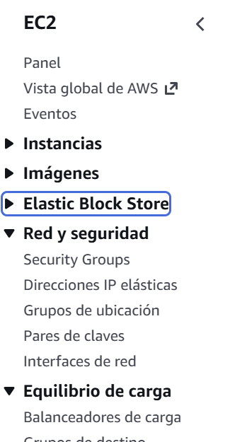
*Figura 1: Acceso a Security Groups en la sección Network & Security de EC2.*
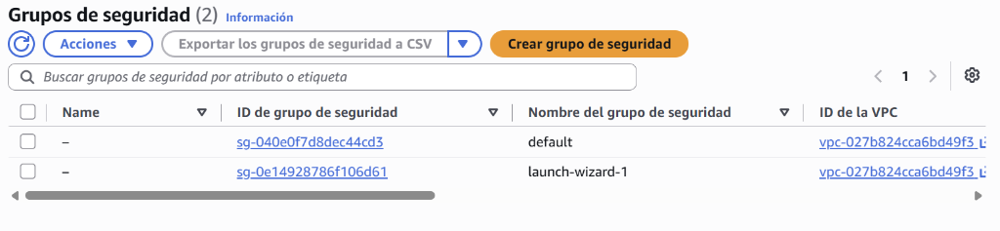
*Figura 2: Creación de un nuevo grupo de seguridad desde el panel de EC2.*
grup-servidors-ftp-sshRegles per a RDP, SSH i FTP amb ports passiusRegla de nomenclatura en AWS
En Amazon Web Services, el nombre de un grupo de seguridad no puede comenzar por el prefijo sg-, ya que AWS lo reserva internamente para los identificadores únicos del sistema (ej: sg-0123456789abcdef). Por ello nombramos el grupo como grup-servidors-ftp-ssh o servidores-ftp-ssh.
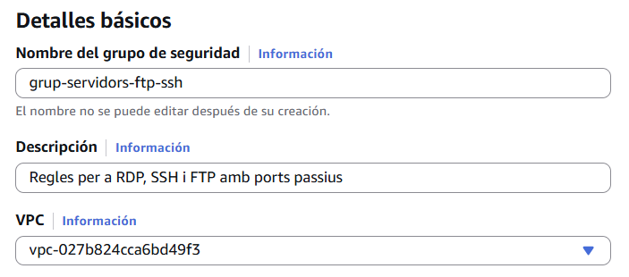
*Figura 3: Configuración del nombre, descripción y VPC del nuevo grupo de seguridad.*
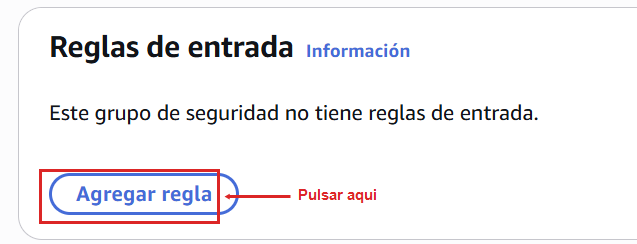
*Figura 4: Ubicación del botón Add rule para definir las aperturas de puertos.*
Añadir las 5 reglas requeridas:
3389 TCP (para administrar gráficamente la máquina).22 TCP (para el servidor OpenSSH).21 TCP.50000-50100 TCP.40000-40100 TCP.📷 Evidencia 2 (insertar en tu documento Word) — Realizar captura de pantalla de la tabla de reglas de entrada del Security Group donde se vean los puertos 21, 22, 3389, 50000-50100 y 40000-40100.
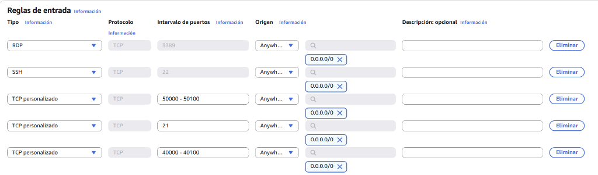
*Figura 5: Definición completa de las 5 reglas de entrada (RDP, SSH, FTP 21 y rangos pasivos).*
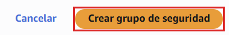
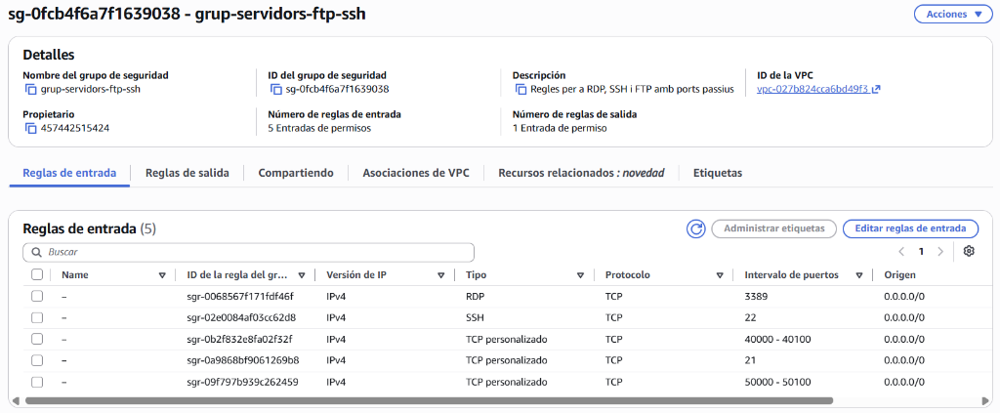
*Figura 7: Resumen del grupo de seguridad grup-servidors-ftp-ssh con sus 5 reglas de entrada operativas.*
Servidor_FTPSSH.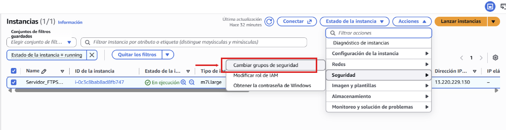
*Figura 8: Opción Change security groups en el menú Actions de la instancia.*
grup-servidors-ftp-ssh, eliminar el grupo anterior (launch-wizard-1) y hacer clic en el botón naranja Save (*Guardar*).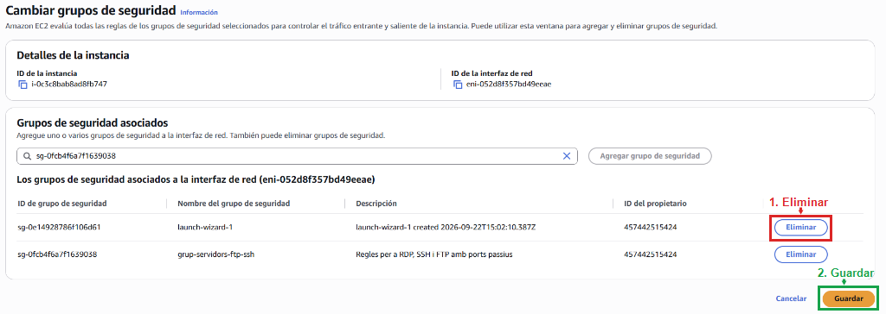
*Figura 9: Ventana de asociación del grupo grup-servidors-ftp-ssh y eliminación del grupo anterior.*
¿Por qué eliminamos launch-wizard-1? ¿Seguirá funcionando el RDP?
Al desasociar el grupo launch-wizard-1 y dejar únicamente grup-servidors-ftp-ssh, garantizamos que toda la seguridad se centraliza en un único grupo ordenado y limpio. No perderás el acceso por RDP, ya que en el nuevo grupo hemos añadido explícitamente la regla de entrada para el puerto TCP 3389 (RDP).
Running y con 2/2 checks passed (*2/2 comprobaciones superadas*)..rdp desde el botón Connect -> pestaña RDP client -> Download remote desktop file (o abrir mstsc).Administrator utilizando vuestro archivo de clave privada vockey.pem (o labsuser.pem) pulsando en Get password.Solo para usuarios con nombre de equipo vinculado a un dominio o SICE
Ir a *More choices* -> *Use a different account* e introducir .\Administrator en vez de solamente Administrator.
📷 Evidencia 3 (insertar en tu documento Word) — Realizar captura de pantalla del escritorio de Windows Server recién conectado mostrando el Administrador del Servidor (*Server Manager*).
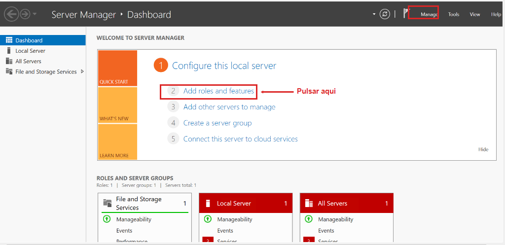
*Figura 10: Acceso al asistente para agregar roles y características desde el Administrador del Servidor (Server Manager).*
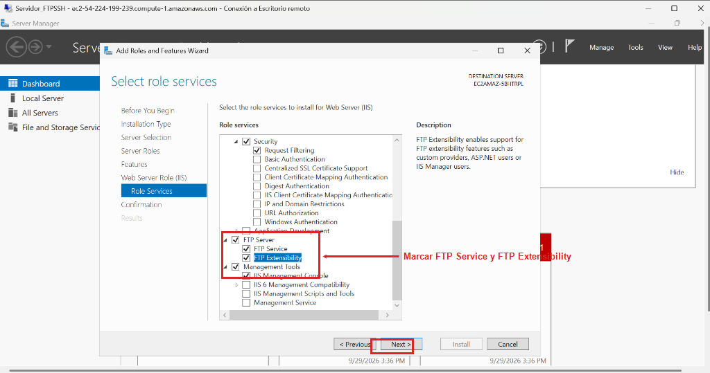
*Figura 11: Selección de los servicios de rol FTP Service y FTP Extensibility en el asistente de instalación.*
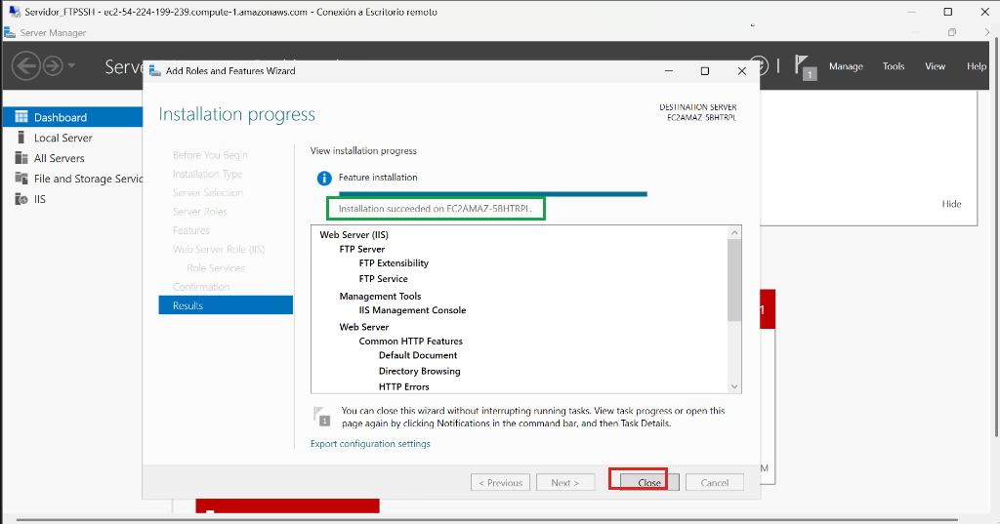
*Figura 12: Barra de instalación completada con éxito para el Servidor Web (IIS) y el Servicio FTP.*
En las imágenes oficiales de Windows Server proporcionadas por Amazon Web Services (AWS EC2), la característica de OpenSSH Server ya viene preinstalada en el sistema como característica opcional (*Optional feature*), por lo que únicamente es necesario verificar su presencia e iniciar su servicio.
Comprobación gráfica mediante Configuración:
optional en el buscador superior).ssh en el filtro de búsqueda.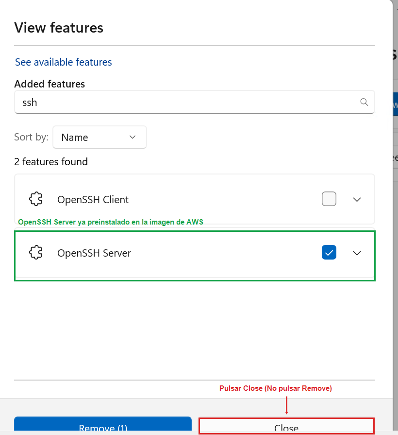
*Figura 13: Comprobación de la característica OpenSSH Server ya preinstalada en la imagen EC2 de AWS.*
Inicio y arranque del servicio OpenSSH (Consola gráfica de Servicios):
Windows + R, escribir services.msc y pulsar Enter (o desde *Server Manager* -> menú superior *Tools* -> *Services*).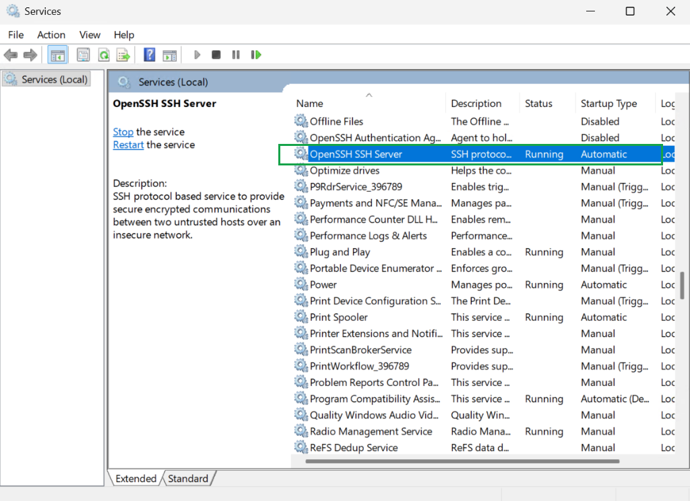
*Figura 14: Consola gráfica de Servicios mostrando OpenSSH SSH Server en estado En ejecución (Running) y con tipo de inicio Automático.*
Alternativa rápida por PowerShell para administradores de sistemas
Si prefieres instalar y activar OpenSSH por línea de comandos, abre una consola de PowerShell como Administrador y ejecuta:
Add-WindowsCapability -Online -Name OpenSSH.Server~~~~0.0.1.0
Start-Service sshd
Set-Service -Name sshd -StartupType Automaticcompmgmt.msc).alumne_redesAlumne RedesUsuari per a proves de transferènciaSmx2026..@ (y confirmar la contraseña).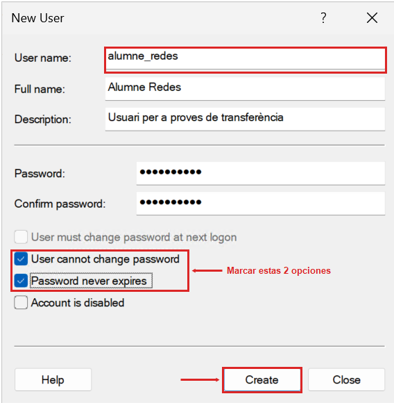
*Figura 15: Ventana de creación del usuario local alumne_redes con las directivas de contraseña configuradas.*
alumne_redes en la lista -> pestaña Member Of:Remote Desktop Users -> pulsar en Check Names y OK.Administrators -> pulsar en Check Names y OK (imprescindible en las instancias Windows Server de AWS para que el servidor OpenSSH autorice el inicio de sesión por SSH y SFTP en el puerto 22).Administrators, Remote Desktop Users y Users), y pulsar en Apply y OK.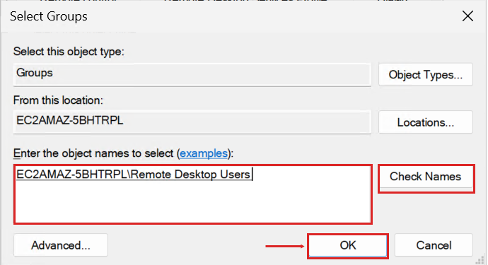
*Figura 16: Selección y comprobación del grupo Remote Desktop Users para el usuario alumne_redes.*
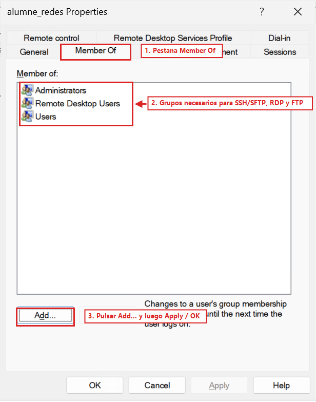
*Figura 16b: Pestaña Member Of mostrando al usuario alumne_redes dentro de Administrators, Remote Desktop Users y Users.*
📷 Evidencia 4 (insertar en tu documento Word) — Realizar captura de pantalla de la ventana de propiedades (*Properties* -> *Member Of*) del usuario
alumne_redesmostrando su pertenencia a los gruposAdministrators,Remote Desktop UsersyUsers.
inetmgr en Inicio o desde *Server Manager* -> *Tools* -> *Internet Information Services (IIS) Manager*).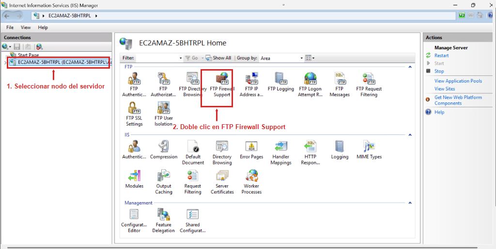
*Figura 17: Selección del nodo raíz del servidor y acceso a FTP Firewall Support en el Administrador de IIS.*
Servidor_FTPSSH y, en la pestaña inferior Detalles (*Details*), copiar la Dirección IPv4 pública (pulsando sobre el icono de los dos cuadraditos azules situado a la izquierda de la IP):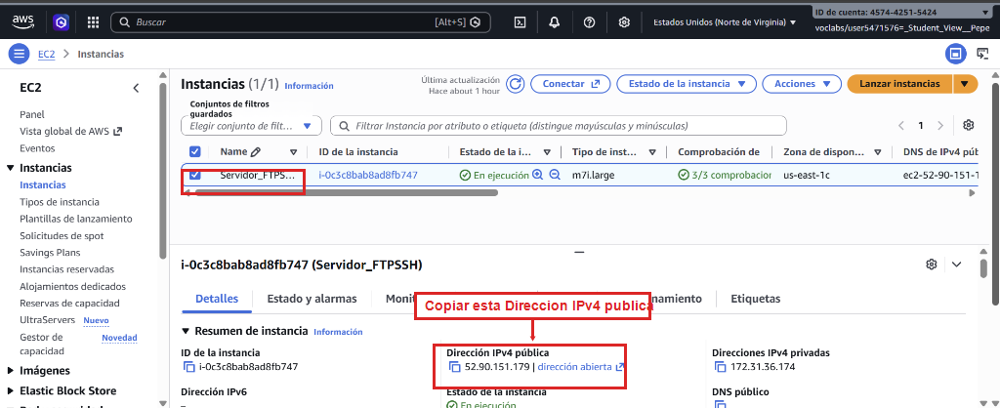
*Figura 18: Localización y copia de la Dirección IPv4 pública de la instancia en la consola de AWS EC2.*
50000-50100.52.90.151.179).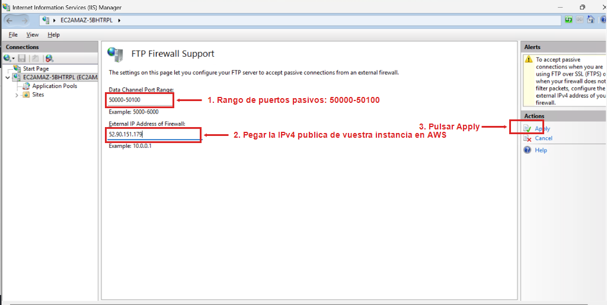
*Figura 19: Configuración del rango de puertos pasivos (50000-50100) y la dirección IPv4 pública externa de AWS.*
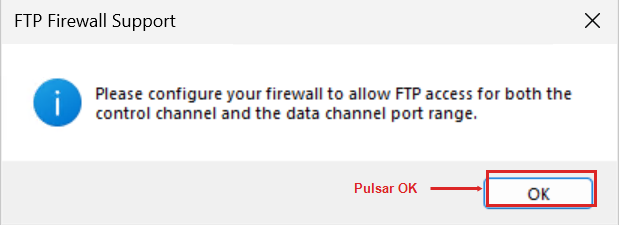
*Figura 19b: Aviso informativo recordando configurar la regla de puertos en el Firewall de Windows.*
¡No olvides poner la IPv4 Pública de AWS!
En Amazon Web Services la máquina virtual solo conoce su IP privada interna (172.31.x.x). Si dejas en blanco el campo External IP Address of Firewall, el servidor FTP responderá a los clientes externos con su IP privada y FileZilla fallará al listar los directorios en modo pasivo. Además, recuerda que si detienes y vuelves a iniciar la instancia en otro día de clase, deberás actualizar aquí la nueva IP pública.
📷 Evidencia 5 (insertar en tu documento Word) — Realizar captura de pantalla del panel FTP Firewall Support con el rango de puertos 50000-50100 y la IP pública de AWS introducidos.
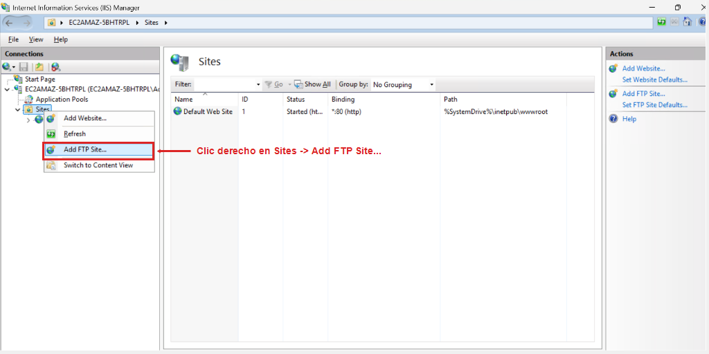
*Figura 20: Menú contextual sobre la carpeta Sites para añadir un nuevo sitio FTP.*
FTP-AULAC:\inetpub\ftproot -> Pulsar Next.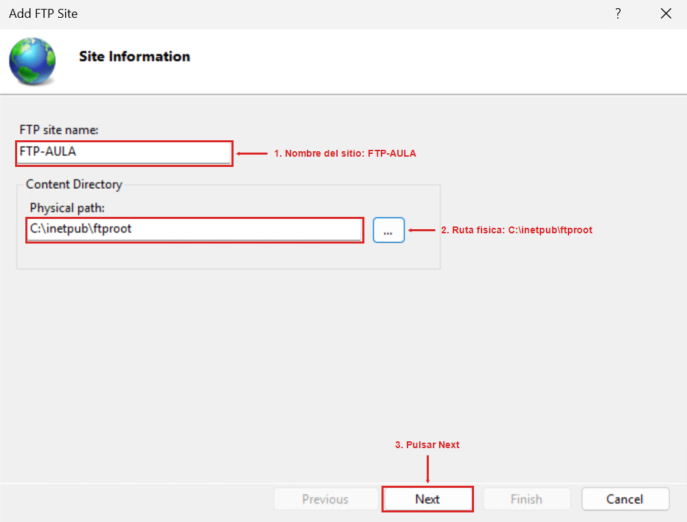
*Figura 21: Definición del nombre del sitio (FTP-AULA) y su directorio raíz físico (C:\inetpub\ftproot).*
21.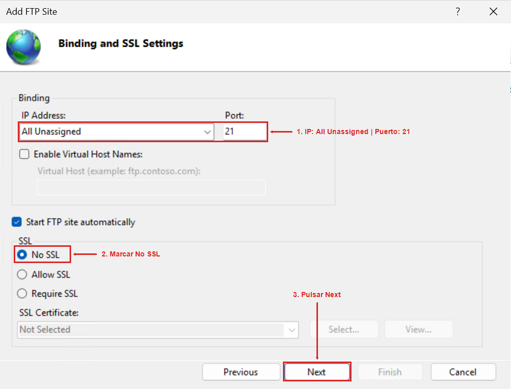
*Figura 22: Configuración del puerto de control 21 TCP y desactivación inicial de SSL.*
alumne_redes.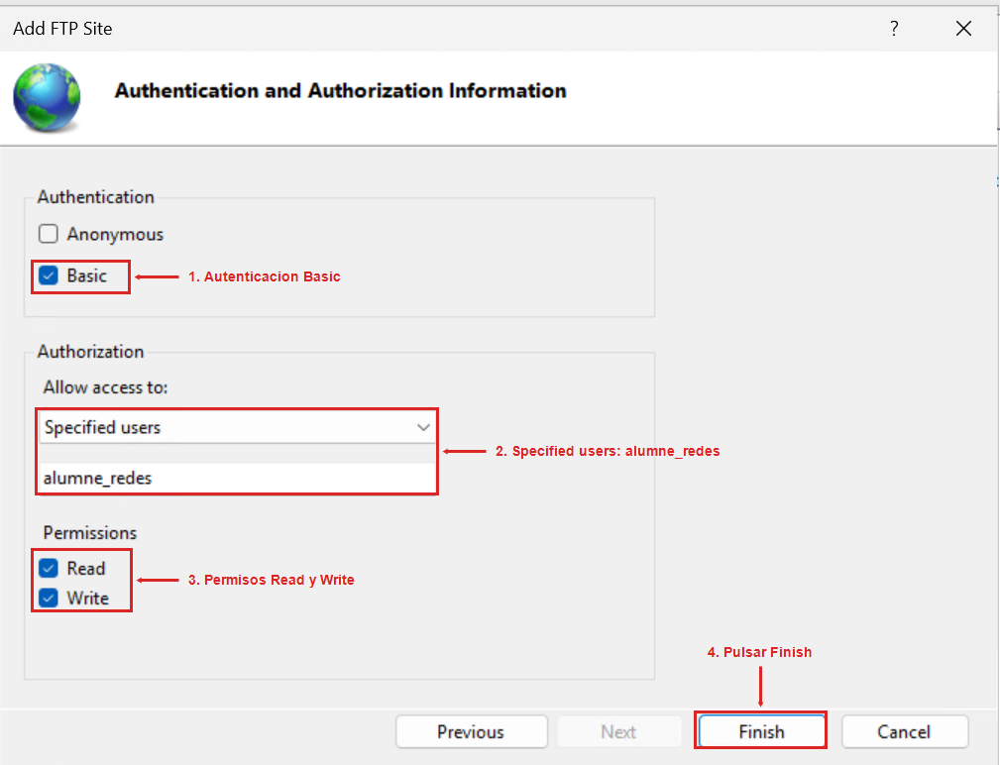
*Figura 23: Habilitación de autenticación básica y permisos de lectura y escritura para el usuario alumne_redes.*
FTP-AULA aparece en la lista de Sites en estado Started (ftp) escuchando por el puerto 21: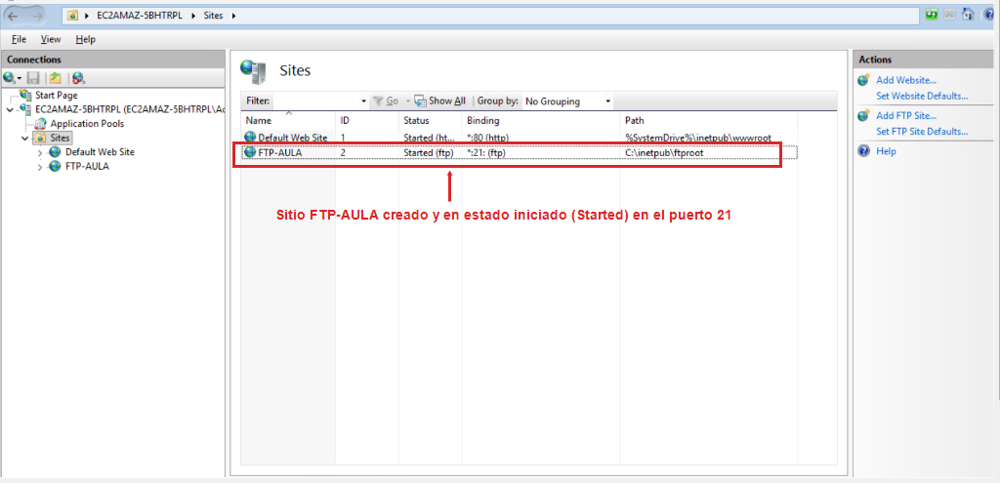
*Figura 24: Sitio FTP-AULA activo y en estado iniciado (Started) en el Administrador de IIS.*
📷 Evidencia 6 (insertar en tu documento Word) — Realizar captura de pantalla de IIS Manager mostrando el sitio
FTP-AULAcreado y en estado iniciado (*Started*).
Por defecto, Windows Server concede únicamente permisos de lectura al grupo de usuarios estándar sobre el directorio físico C:\inetpub\ftproot. Aunque en IIS hayamos autorizado *Read* y *Write* para alumne_redes, cuando un usuario intenta subir un fichero, Windows comprueba tanto los permisos FTP de IIS como los permisos NTFS del sistema de archivos (aplicando siempre el más restrictivo). Por ello, debemos otorgar el permiso Modify (*Modificar*) al usuario alumne_redes en la carpeta:
C:\inetpub, hacer clic derecho sobre la carpeta ftproot y seleccionar Properties (*Propiedades*):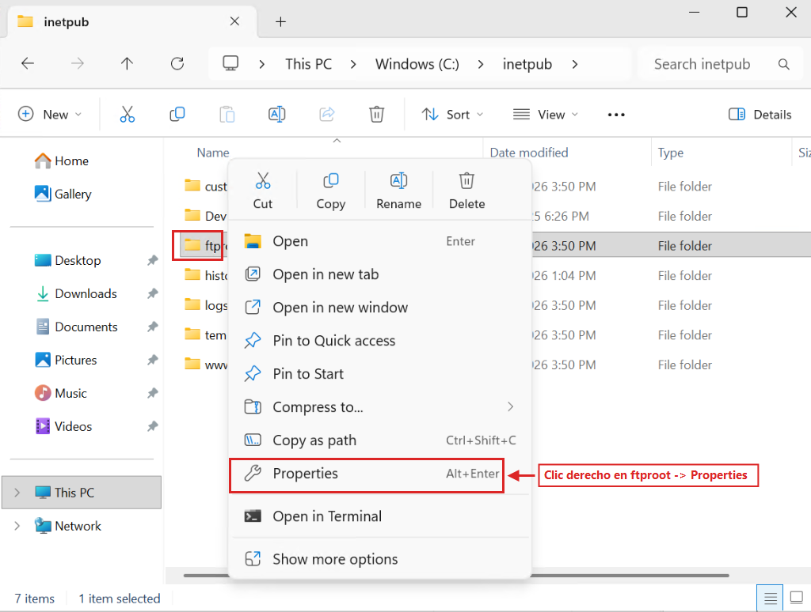
*Figura 24b: Acceso a las propiedades de la carpeta física C:\inetpub\ftproot desde el Explorador de archivos.*
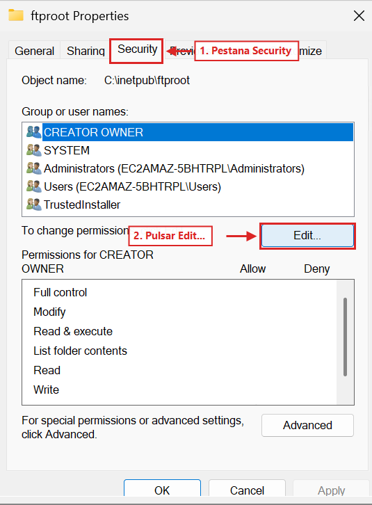
*Figura 24c: Pestaña Security de las propiedades de ftproot y acceso a la edición de permisos NTFS.*
alumne_redes, pulsar en Check Names para resolver el nombre local completo y hacer clic en OK: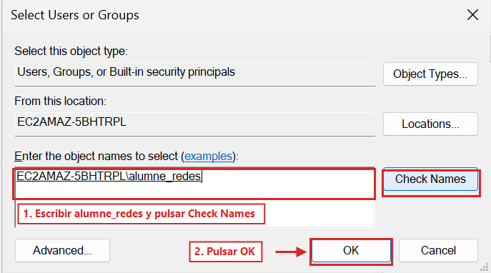
*Figura 24d: Adición del usuario local alumne_redes a la lista de control de acceso (ACL) de la carpeta.*
alumne_redes) seleccionado en la lista superior, marcar la casilla Modify (*Modificar*) en la columna Allow (lo cual activará automáticamente también el permiso *Write*). Finalmente, pulsar en Apply y en OK: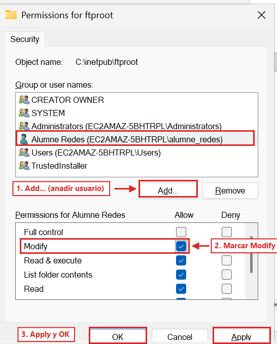
*Figura 24e: Concesión del permiso NTFS Modify (lectura, escritura y modificación) al usuario alumne_redes sobre C:\inetpub\ftproot.*
Permisos válidos tanto para FTP (puerto 21) como para SFTP/SSH (puerto 22)
Al asignar estos permisos NTFS directamente a la cuenta local alumne_redes sobre C:\inetpub\ftproot, el usuario no solo podrá subir y borrar archivos conectándose por FTP tradicional o FTPS (puerto 21), sino que también tendrá acceso completo a dicho directorio cuando se conecte mediante SSH o SFTP (puerto 22).
Windows + R y ejecutar wf.msc):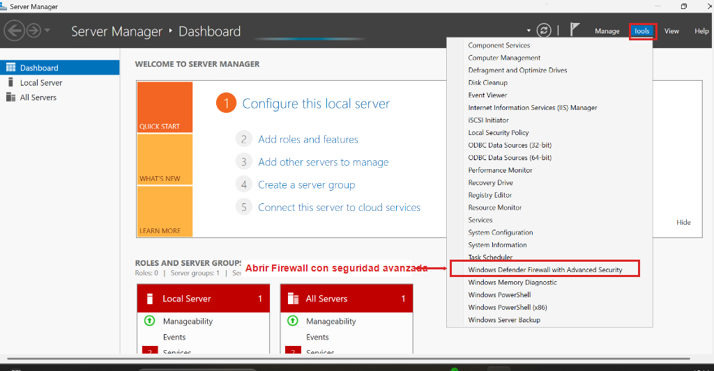
*Figura 25: Apertura de Windows Defender Firewall with Advanced Security desde el menú Tools de Server Manager.*
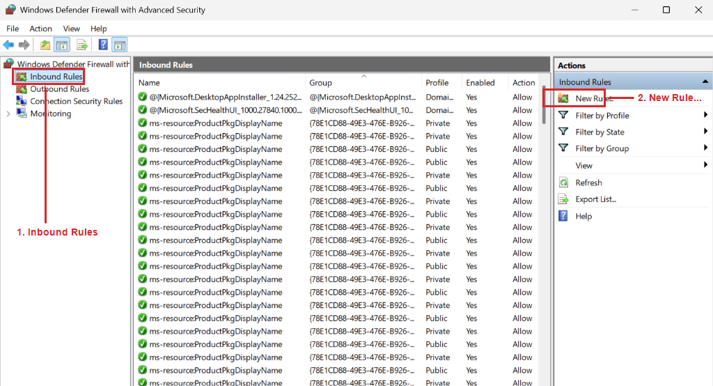
*Figura 26: Selección de Inbound Rules y creación de una nueva regla de entrada.*
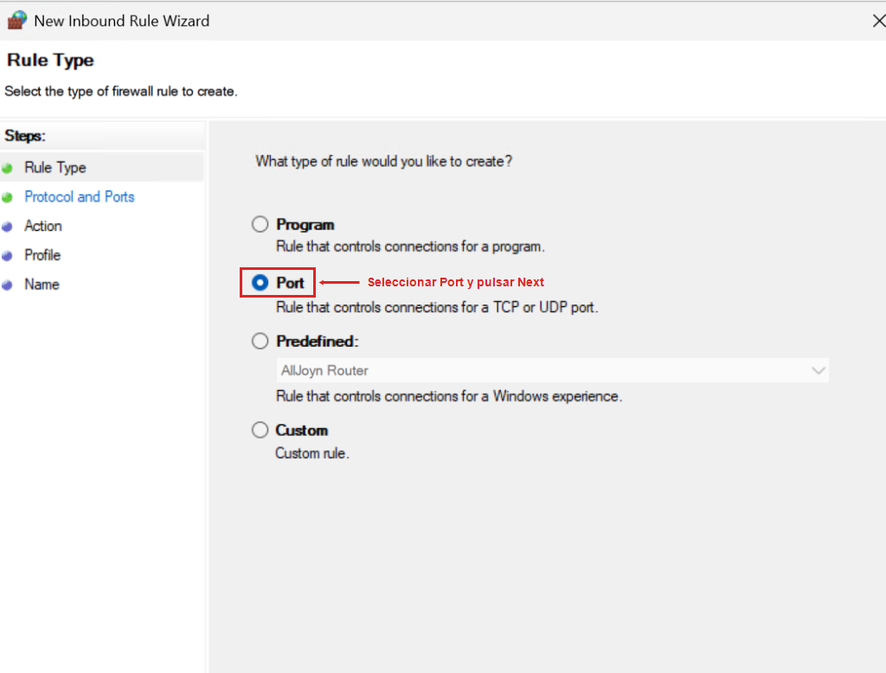
*Figura 27: Selección de regla basada en puerto (Port).*
50000-50100 (o escribir directamente 22, 50000-50100 para dejar abierto a la vez el puerto 22 de OpenSSH Server / SFTP en el Firewall de Windows). Pulsar Next.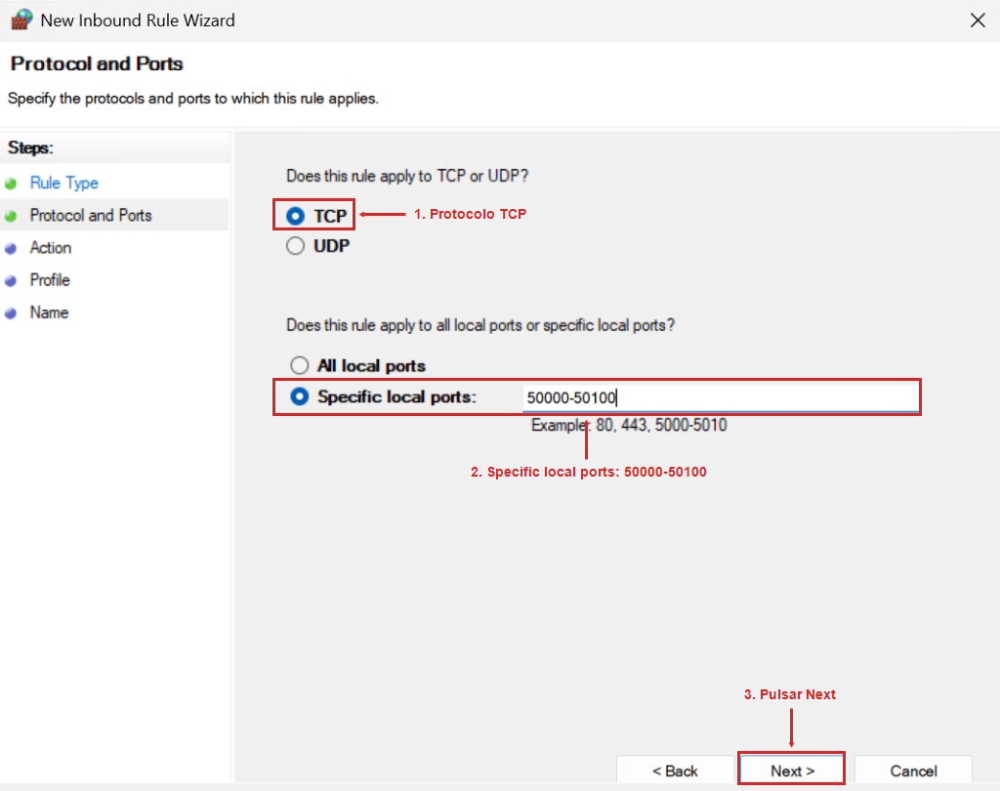
*Figura 28: Apertura del rango de puertos TCP 50000-50100 para el canal de datos pasivo.*
Añadir el puerto 22 (SSH/SFTP) a la regla del Firewall de Windows
En las imágenes de Windows Server de AWS, aunque *OpenSSH Server* viene preinstalado, el Firewall de Windows Defender trae cerrado el puerto 22 TCP. Si ya habías creado la regla solo con 50000-50100, puedes hacer doble clic sobre la regla creada (FTP Pasivo Datos (50000-50100)), ir a la pestaña Protocols and Ports, cambiar *Local port* a 22, 50000-50100 y pulsar Apply y OK:
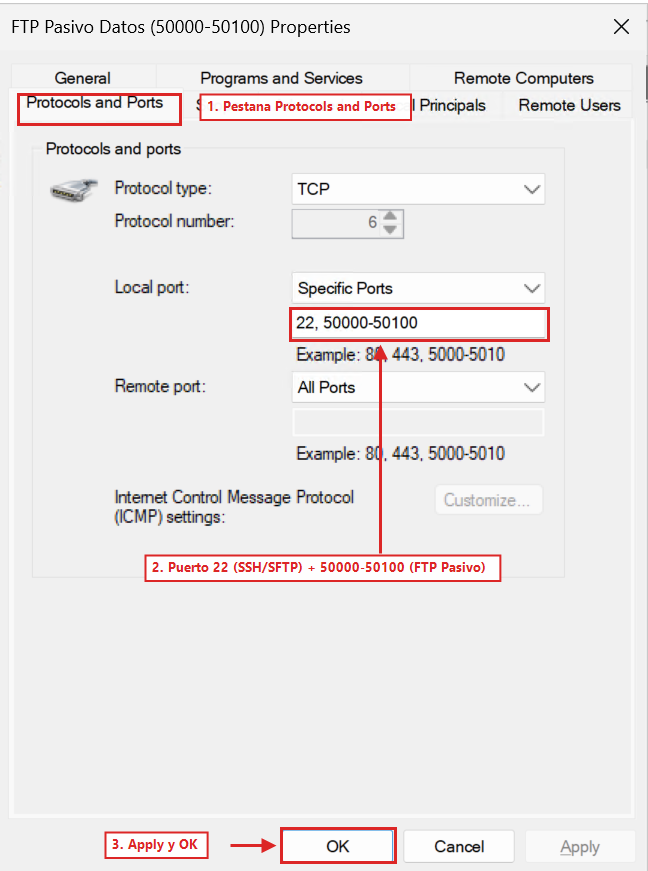
*Figura 28b: Pestaña Protocols and Ports permitiendo simultáneamente el puerto 22 (SSH/SFTP) y el rango 50000-50100 (FTP Pasivo).*
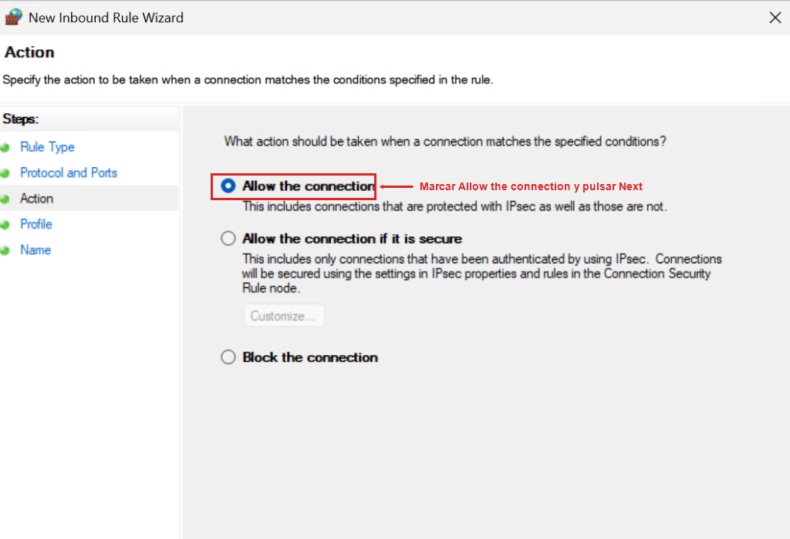
*Figura 29: Autorización de las conexiones entrantes (Allow the connection).*
FTP Pasivo Datos (50000-50100) y pulsar Finish.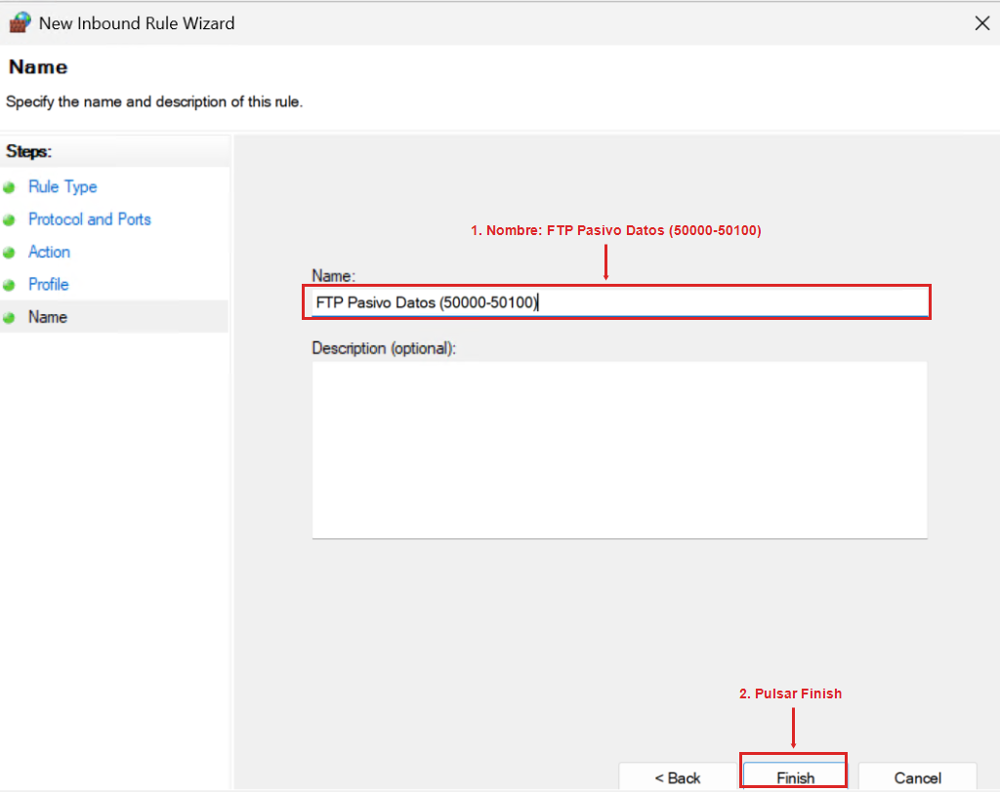
*Figura 30: Nombre descriptivo de la regla para identificar los puertos pasivos de FTP.*
services.msc o desde *Server Manager* -> *Tools* -> *Services*).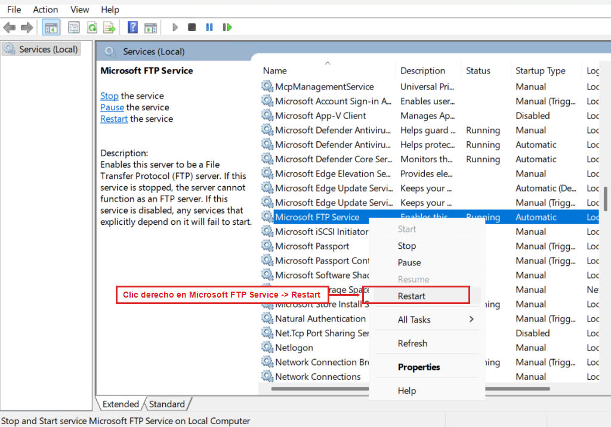
*Figura 31: Reinicio del servicio Microsoft FTP Service desde la consola gráfica de Servicios.*
📷 Evidencia 7 (insertar en tu documento Word) — Realizar captura de pantalla de la regla
FTP Pasivo Datos (50000-50100)creada en el Firewall de Windows y del servicioMicrosoft FTP Serviceen ejecución.
Qué debes añadir a tu documento Word al terminar el Apartado 6
En el Apartado 6 de tu documento Word de la unidad, asegúrate de haber insertado y explicado brevemente las Evidencias 1 a 7:
Servidor_FTPSSH en estado Running en AWS EC2.grup-servidors-ftp-ssh (puertos 21, 22, 3389, 50000-50100 y 40000-40100).alumne_redes (*Member Of*: Administrators, Remote Desktop Users, Users).FTP Firewall Support en IIS con el rango 50000-50100 y la IP pública de AWS.FTP-AULA creado y en estado Started en IIS Manager.FTP Pasivo Datos (50000-50100) en el Firewall de Windows y servicio Microsoft FTP Service en ejecución.Obligatorio seguir las normas para la presentación de trabajos escritos.
Todas las evidencias deberán incluir capturas de pantalla completas donde se aprecie claramente el nombre del equipo, usuario y la fecha/hora.
Una vez instalado y configurado el servidor FTP en Windows Server (Servidor_FTPSSH), vamos a verificar inmediatamente desde nuestro equipo del aula que el canal de control (21 TCP) y el canal de datos en modo pasivo (50000-50100 TCP) funcionan correctamente antes de avanzar a configuraciones más complejas.
<IP_PUBLICA_WINDOWS> (en nuestro ejemplo, 52.90.151.179)alumne_redesSmx2026..@21 (si se deja en blanco, FileZilla utiliza por defecto el puerto 21)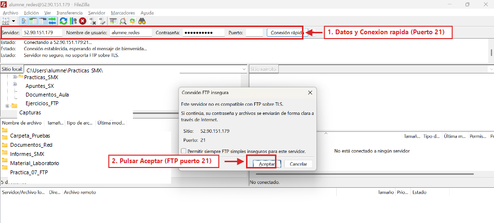
*Figura 32: Introducción de credenciales en la barra de Conexión rápida de FileZilla y confirmación del diálogo de conexión FTP en el puerto 21.*
Directorio "/" listado correctamente) gracias al modo pasivo configurado.Prova_ftp.txt (o prueba_win.txt) y subirlo arrastrándolo al panel derecho (Sitio remoto /). Comprobar en la pestaña inferior Transferencias satisfactorias (1) que el fichero se ha transferido sin errores: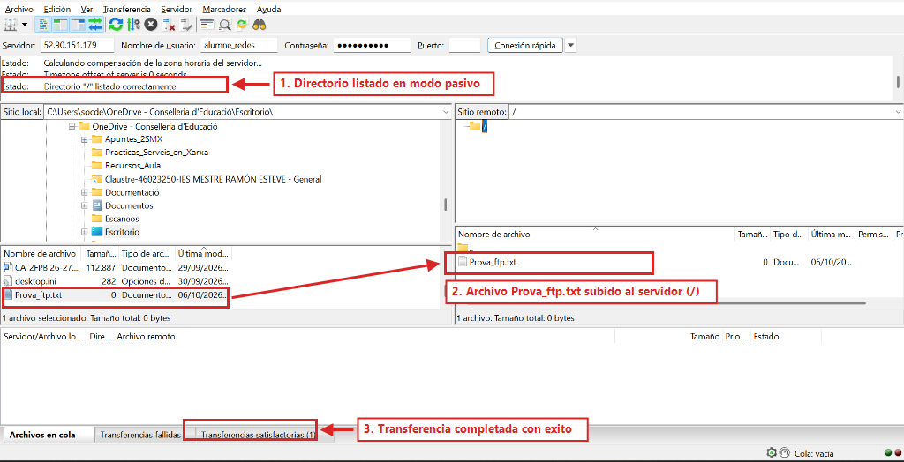
*Figura 33: Directorio raíz listado en modo pasivo y archivo Prova_ftp.txt transferido con éxito al servidor Windows Server.*
📷 Evidencia 8 (insertar en tu documento Word) — Realizar captura de pantalla de FileZilla mostrando la conexión exitosa en modo pasivo y el archivo subido al servidor Windows Server.
230 User logged in), pero justo después la conexión se queda congelada mostrando Comando: MLSD o LIST y tras 20 segundos devuelve Error: Conexión superó el tiempo de espera. No se pudo recuperar el listado del directorio.21) está abierto, pero el canal de datos pasivo (50000-50100) está bloqueado por el Firewall de Windows Defender (wf.msc), por el Security Group de AWS, o bien se olvidó introducir la IPv4 pública de AWS en FTP Firewall Support de IIS.PASV con la IP pública correcta y un puerto del rango 50000-50100.FTP Pasivo Datos (50000-50100) está activa en wf.msc.Qué debes añadir a tu documento Word al terminar el Apartado 7
En el Apartado 7 de tu documento Word, incluye:
Prova_ftp.txt transferido en la pestaña de *Transferencias satisfactorias*.Obligatorio seguir las normas para la presentación de trabajos escritos.
Todas las evidencias deberán incluir capturas de pantalla completas donde se aprecie claramente el nombre del equipo, usuario y la fecha/hora.
En un entorno empresarial real, cada departamento o usuario debe disponer de un espacio privado exclusivo para almacenar sus ficheros confidenciales, sin que otros usuarios puedan acceder ni manipularlos. Además, suele habilitarse una carpeta pública compartida (para catálogos, formularios o drivers) accesible por cualquier usuario de forma anónima, pero con permisos estrictos de solo lectura.
compmgmt.msc).usuari_ventas (Password: Smx2026..@).usuari_compras (Password: Smx2026..@).C:\inetpub\ftproot y crear la siguiente estructura exacta de carpetas y archivos de prueba dentro de LocalUser (en IIS, cuando se activa el aislamiento por nombre de usuario, los usuarios locales entran en LocalUser\<usuario> y el usuario anonymous entra automáticamente en LocalUser\Public):C:\inetpub\ftproot\
└── LocalUser\
├── alumne_redes\
├── usuari_ventas\
│ └── informe_ventas_privado.txt
├── usuari_compras\
│ └── presupuesto_compras_privado.txt
└── Public\
└── catalogo_empresa_2026.pdfusuari_ventas sobre su carpeta C:\inetpub\ftproot\LocalUser\usuari_ventas y a usuari_compras sobre C:\inetpub\ftproot\LocalUser\usuari_compras (pestaña Security -> Edit... -> Add...), manteniendo la carpeta LocalUser\Public únicamente con permisos de lectura para IUSR / Users: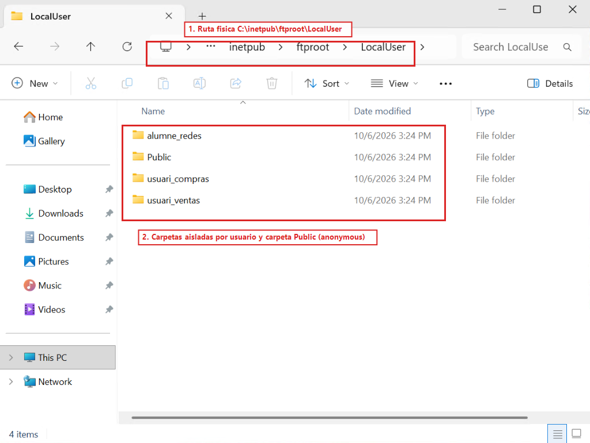
*Figura 33b: Estructura física de carpetas en C:\inetpub\ftproot\LocalUser para usuarios locales aislados y carpeta Public para acceso anónimo.*
📷 Evidencia 9 (insertar en tu documento Word) — Realizar captura de pantalla de File Explorer en Windows Server mostrando la estructura de carpetas dentro de
C:\inetpub\ftproot\LocalUser.
inetmgr).FTP-AULA.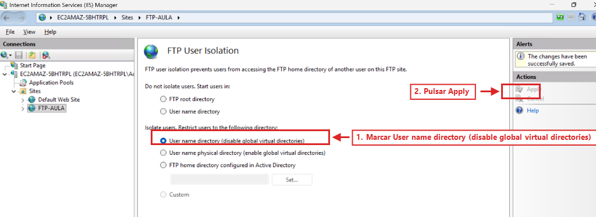
*Figura 33c: Activación de la directiva User name directory (disable global virtual directories) en FTP User Isolation.*
FTP-AULA -> hacer doble clic en el icono FTP Authentication:FTP-AULA -> hacer doble clic en el icono FTP Authorization Rules:alumne_redes, usuari_ventas, usuari_compras y marcar los permisos Read y Write -> pulsar OK.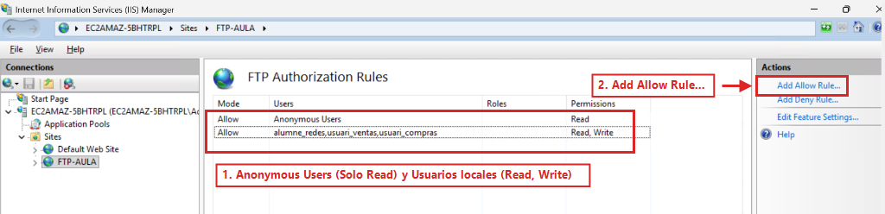
*Figura 33d: Reglas de autorización en FTP Authorization Rules concediendo solo lectura a Anonymous Users y lectura/escritura a los usuarios locales.*
usuari_ventas):<IP_PUBLICA_WINDOWS>, Nombre de usuario usuari_ventas, Contraseña Smx2026..@ y Puerto 21 -> pulsar Conexión rápida./) donde ve exclusivamente su archivo informe_ventas_privado.txt, sin posibilidad de subir de nivel ni ver la carpeta de usuari_compras: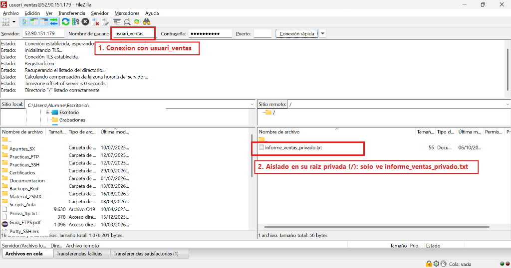
*Figura 33e: Usuario usuari_ventas enjaulado en su directorio privado viendo únicamente informe_ventas_privado.txt.*
anonymous - Solo Lectura):<IP_PUBLICA_WINDOWS>, Nombre de usuario anonymous (o dejar usuario y contraseña en blanco) y Puerto 21 -> pulsar Conexión rápida.LocalUser\Public) y ve el archivo catalogo_empresa_2026.pdf (pudiendo descargarlo sin problema).catalogo_empresa_2026.pdf (o subir un archivo desde el panel izquierdo hacia el servidor).Respuesta: 550 Access is denied: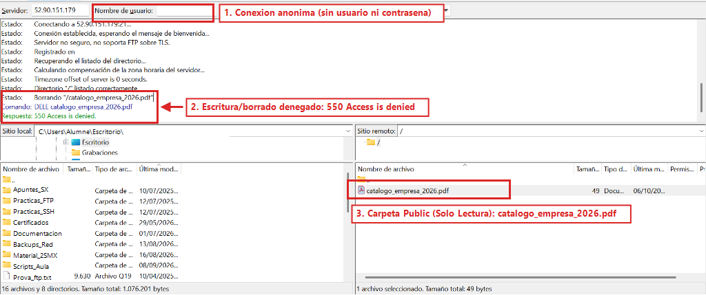
*Figura 33f: Acceso anónimo de solo lectura a la carpeta Public con denegación de borrado/escritura (550 Access is denied).*
📷 Evidencia 10 (insertar en tu documento Word) — Realizar captura de pantalla de FileZilla mostrando la vista privada de
usuari_ventasy otra captura mostrando el error550 Access is deniedal intentar subir o borrar un fichero como usuarioanonymous.
usuari_ventas se conecta por FTP correctamente, pero al intentar subir un fichero o crear una carpeta en su propio directorio recibe Respuesta: 550 Access is denied.Read, Write), los permisos de seguridad del sistema de ficheros de Windows (NTFS) de la carpeta física C:\inetpub\ftproot\LocalUser\usuari_ventas no conceden permiso de modificación (Modify) al usuario local.Qué debes añadir a tu documento Word al terminar el Apartado 8
En el Apartado 8 de tu documento Word, incluye las Evidencias 9 y 10:
C:\inetpub\ftproot\LocalUser en el Explorador de archivos de Windows Server.usuari_ventas (informe_ventas_privado.txt) y el error 550 Access is denied al intentar borrar o subir archivos como usuario anonymous.Obligatorio seguir las normas para la presentación de trabajos escritos.
Todas las evidencias deberán incluir capturas de pantalla completas donde se aprecie claramente el nombre del equipo, usuario y la fecha/hora.
El protocolo FTP tradicional transmite contraseñas y datos en texto claro sin cifrar. En esta tarea aseguraremos nuestro servidor Windows Server (Servidor_FTPSSH) mediante FTPS (FTP sobre SSL/TLS), creando un certificado digital autofirmado en IIS e implementando cifrado obligatorio.
inetmgr).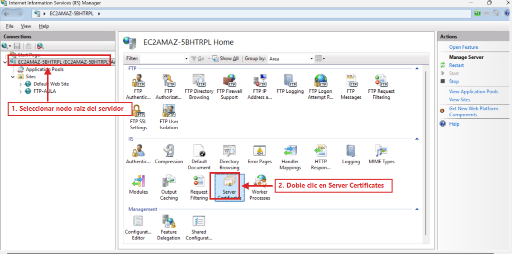
*Figura 36: Selección del nodo raíz del servidor y acceso a Server Certificates en IIS Manager.*
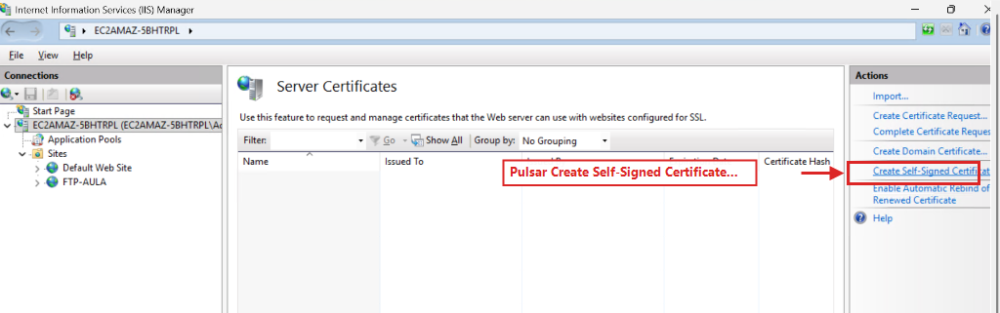
*Figura 37: Acceso al asistente de creación de certificado autofirmado.*
Certificado-FTPs-AulaPersonal.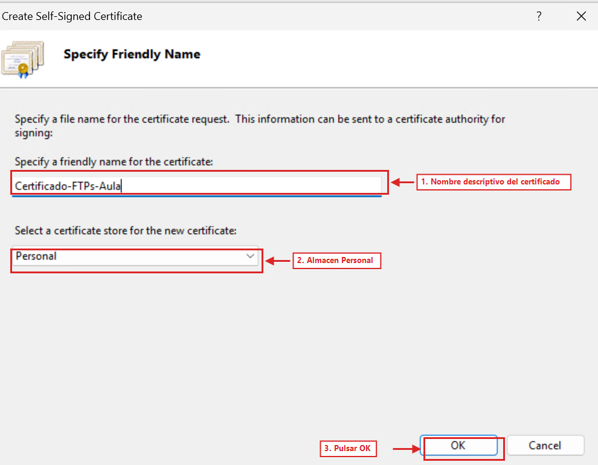
*Figura 38: Configuración del nombre descriptivo Certificado-FTPs-Aula en el almacén Personal.*
Certificado-FTPs-Aula aparece listado en el panel central de Server Certificates con su fecha de caducidad (*Expiration Date*) y su huella (*Certificate Hash*):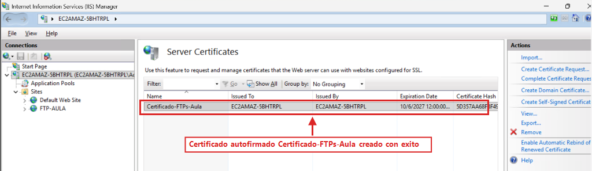
*Figura 39: Certificado digital Certificado-FTPs-Aula generado en el servidor.*
📷 Evidencia 11 (insertar en tu documento Word) — Realizar captura de pantalla del panel Server Certificates mostrando el nuevo certificado creado con su fecha de caducidad y emisor.
FTP-AULA.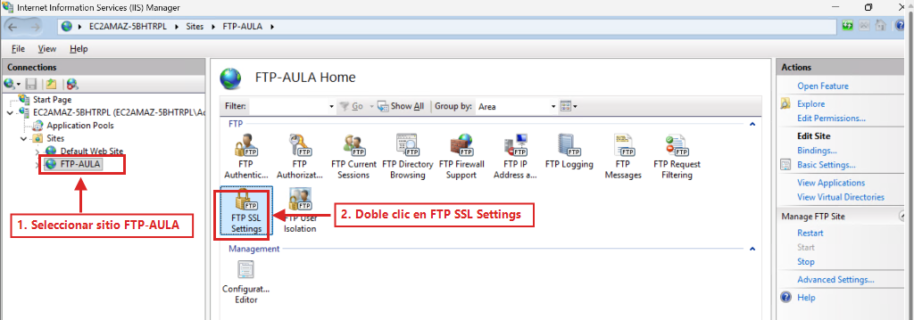
*Figura 40: Selección del sitio FTP-AULA y apertura de FTP SSL Settings.*
Certificado-FTPs-Aula.*Figura 41: Asignación del certificado Certificado-FTPs-Aula y activación de Require SSL connections en FTP SSL Settings.*
services.msc).21 (podéis hacerlo directamente desde la barra de Conexión rápida introduciendo Servidor <IP_PUBLICA_WINDOWS>, Usuario alumne_redes, Contraseña Smx2026..@ y Puerto 21, ya que FileZilla negocia automáticamente FTP explícito sobre TLS si el servidor lo soporta, o bien guardando el perfil en Archivo -> Gestor de sitios... con cifrado *Requiere FTP explícito sobre TLS*).21, aparecerá la ventana emergente Certificado desconocido:Protocolo: TLS1.2, Cifrado: AES-256-GCM).*Figura 42: Verificación del certificado digital autofirmado (SHA-256) y sesión cifrada TLS 1.2 (AES-256-GCM) en el puerto 21.*
Respuesta: 200 PBSZ command successful y Comando: PROT P -> 200 PROT command successful) y se lista el directorio raíz (Directorio "/" listado correctamente).*Figura 43: Conexión FTPS establecida en el puerto 21 con cifrado del canal de datos (PROT P) y candado de seguridad activo.*
📷 Evidencia 12 (insertar en tu documento Word) — Realizar captura de pantalla de la ventana del certificado en FileZilla mostrando la huella digital SHA-256 y de FileZilla conectado con el candado de conexión segura activo.
Qué debes añadir a tu documento Word al terminar el Apartado 9
En el Apartado 9 de tu documento Word, incluye las Evidencias 11 y 12:
Certificado-FTPs-Aula creado.PBSZ 0 / PROT P y el candado de seguridad activo.Obligatorio seguir las normas para la presentación de trabajos escritos.
Todas las evidencias deberán incluir capturas de pantalla completas donde se aprecie claramente el nombre del equipo, usuario y la fecha/hora.
El acceso por contraseña convencional está expuesto a ataques de fuerza bruta. En esta tarea aprovecharemos el servicio OpenSSH Server que dejamos activo en Windows Server (Servidor_FTPSSH) en el apartado 6.3.1 para conectar remotamente por el puerto 22 con PuTTY, generar un par de claves asimétricas con PuTTYgen y bastionar el servidor deshabilitando el acceso por contraseña.
<IP_PUBLICA_WINDOWS>), Port 22 y Connection type SSH.Accept) e iniciar sesión con el usuario alumne_redes y su contraseña (Smx2026..@).whoami y hostname para verificar que estamos dentro de la consola remota de Windows Server:*Figura 45: Inicio de sesión remota SSH en el puerto 22 hacia Windows Server y comprobación de usuario y nombre de host.*
2048 bits) o EdDSA (Ed25519).alumne_redes@ies-mre.clave_privada_smx.ppk en vuestra carpeta de trabajo.ssh-rsa AAAA...).*Figura 46: Generación del par de claves asimétricas y visualización de la clave pública.*
📷 Evidencia 13 (insertar en tu documento Word) — Realizar captura de pantalla de la ventana de PuTTYgen mostrando la clave generada y el comentario
alumne_redes@ies-mre.
C:\ProgramData\ssh\sshd_config (seleccionando *All Files (*.*)* en el diálogo de apertura).Match Group administrators y AuthorizedKeysFile __PROGRAMDATA__/ssh/administrators_authorized_keys) y comentarlas añadiendo una almohadilla # delante de cada una para que Windows utilice siempre la carpeta .ssh estándar de cada usuario:#Match Group administrators
# AuthorizedKeysFile __PROGRAMDATA__/ssh/administrators_authorized_keysFile -> Save).C:\Users\alumne_redes\.ssh (si no existe) y dentro de ella crear con Notepad el archivo authorized_keys (sin extensión .txt), pegando en una sola línea la clave pública copiada desde PuTTYgen.services.msc.<IP_PUBLICA_WINDOWS>). Port: 22.clave_privada_smx.ppk.alumne_redes.Windows-Clave-SSH y pulsar Save.Using username "alumne_redes".
Authenticating with public key "alumne_redes@ies-mre"accediendo directamente a la consola de Windows Server sin pedir contraseña.
C:\ProgramData\ssh\sshd_config con Notepad (como Administrador).PubkeyAuthentication yes
PasswordAuthentication noservices.msc..ppk) e intentar entrar como alumne_redes: comprobar que el servidor rechaza inmediatamente el acceso devolviendo:No supported authentication methods available (server sent: publickey)*Figura 47: Inicio de sesión automático mediante clave privada y denegación de acceso por contraseña tras el bastionado.*
📷 Evidencia 14 (insertar en tu documento Word) — Realizar captura de pantalla de PuTTY entrando sin contraseña con la clave pública (
Authenticating with public key) y otra captura mostrando el bloqueoNo supported authentication methods available (server sent: publickey)al intentar conectar sin clave.
Qué debes añadir a tu documento Word al terminar el Apartado 10
En el Apartado 10 de tu documento Word, incluye las Evidencias 13 y 14:
alumne_redes@ies-mre.No supported authentication methods available) al intentar acceder sin clave privada.Obligatorio seguir las normas para la presentación de trabajos escritos.
Todas las evidencias deberán incluir capturas de pantalla completas donde se aprecie claramente el nombre del equipo, usuario y la fecha/hora.
Para completar todo el bloque práctico sobre Windows Server (Servidor_FTPSSH), realizaremos transferencias seguras por el puerto 22 mediante SFTP y SCP, y auditaremos tanto los registros de actividad W3C de IIS como los paquetes de red capturados con Wireshark.
alumne_redes, contraseña Smx2026..@ y el Puerto 22) o desde Archivo -> Gestor de sitios... -> Nuevo sitio (SFTP-Windows) seleccionando el protocolo SFTP - SSH File Transfer Protocol y cargando vuestro archivo de clave privada .ppk.ssh-ed25519) y la huella criptográfica (Fingerprint SHA256) del servidor. Pulsar en Aceptar:*Figura 34: Verificación de la clave host SSH (ssh-ed25519 y huella SHA256) al establecer conexión SFTP en el puerto 22.*
Hostkey is trusted y Directorio "/C:/Users/alumne_redes" listado correctamente) y que en la barra de estado inferior derecha de FileZilla aparece el icono del candado dorado cerrado:*Figura 35: Conexión SFTP activa en el puerto 22 hacia Windows Server con listado del directorio remoto y candado de conexión cifrada.*
fichero_sftp.txt) y verificar que la transferencia cifrada concluye con éxito.📷 Evidencia 15 (insertar en tu documento Word) — Realizar captura de pantalla de FileZilla conectado por el protocolo SFTP al puerto 22 de Windows Server mostrando la transferencia completada y el icono del candado inferior.
scp:Set-Content -Path .\backup_aula.txt -Value "Copia de seguridad realizada mediante SCP - 2SMX"
scp .\backup_aula.txt alumne_redes@<IP_PUBLICA_WINDOWS>:C:/Users/alumne_redes/100% y descargar el archivo de vuelta con un nuevo nombre (fichero_recuperado.txt) para verificar su integridad:scp alumne_redes@<IP_PUBLICA_WINDOWS>:C:/Users/alumne_redes/backup_aula.txt .\fichero_recuperado.txt
Get-Content .\fichero_recuperado.txt*Figura 48: Subida y descarga segura de archivos hacia Windows Server por línea de comandos mediante SCP sobre el puerto 22.*
📷 Evidencia 16 (insertar en tu documento Word) — Realizar captura de pantalla de PowerShell ejecutando los comandos
scpde subida y descarga mostrando la transferencia completada al100%.
C:\inetpub\logs\LogFiles\FTPSVC1\u_exAAMMDD.log, por ejemplo u_ex261006.log) con Notepad:*Figura 44: Inspección en Notepad del fichero de registro W3C (u_ex261006.log) mostrando la autenticación (230), apertura de puertos pasivos (50000-50003), subida de archivo (STOR Prova_ftp.txt -> 226) y negociación FTPS (AUTH TLS -> 234 y PROT P -> 200).*
234: Negociación de cifrado AUTH TLS aceptada.230: Inicio de sesión correcto (PASS ***).227: Entrada en Modo Pasivo (PASV).226: Transferencia de archivo completada (STOR Prova_ftp.txt).550: Permiso denegado (cuando el usuario anonymous intentó borrar el catálogo).📷 Evidencia 17 (insertar en tu documento Word) — Realizar captura de pantalla del fichero de log de IIS en Notepad destacando una línea con un comando de subida exitoso (
STORcon código226) y la negociación FTPS (AUTH TLScon código234).
Para comprobar empíricamente por qué nunca debe utilizarse FTP sin cifrar, capturaremos con Wireshark en el PC del aula el tráfico hacia nuestro Windows Server aplicando el filtro ftp || tls || ssh:
Request: USER alumne_redes y Request: PASS Smx2026..@.Require SSL): Tras AUTH TLS, todo viaja cifrado como TLSv1.2 Application Data.22): Todo viaja blindado como SSHv2 Encrypted packet.*Figura 44b: Auditoría en Wireshark contrastando la exposición de credenciales en FTP plano (Request: PASS Smx2026..@) frente al tráfico cifrado en FTPS (TLSv1.2 Application Data) y SFTP (SSHv2 Encrypted packet).*
📷 Evidencia 18 (insertar en tu documento Word) — Realizar captura de pantalla de Wireshark mostrando los paquetes cifrados
TLSv1.2 Application Data(FTPS) ySSHv2 Encrypted packet(SFTP).
Qué debes añadir a tu documento Word al terminar el Apartado 11 (Fin del Bloque Windows Server)
En el Apartado 11 de tu documento Word, incluye las Evidencias 15 a 18:
22) a Windows Server con el candado activo.scp al 100%.u_exAAMMDD.log) en Notepad destacando las líneas STOR (226) y AUTH TLS (234).TLSv1.2 Application Data (FTPS) y SSHv2 Encrypted packet (SFTP).Obligatorio seguir las normas para la presentación de trabajos escritos.
Todas las evidencias deberán incluir capturas de pantalla completas donde se aprecie claramente el nombre del equipo, usuario y la fecha/hora.
Una vez completadas y verificadas todas las prácticas sobre Windows Server, pasamos al segundo bloque del laboratorio desplegando el servicio de transferencia de ficheros en Linux (Ubuntu Server 24.04 LTS) mediante el demonio vsftpd. *(Mientras trabajes exclusivamente en esta tarea y en la Tarea 13, puedes mantener detenida la máquina de Windows Server para ahorrar saldo en AWS Academy).*
| Parámetro de configuración | Valor requerido |
|---|---|
| Name (Nombre) | Ubuntu_FTPSSH |
| Application and OS Images (AMI) | Ubuntu Server 24.04 LTS (HVM), SSD Volume Type (64 bits x86) |
| Instance type (Tipo de instancia) | t2.micro o t3.micro (1 vCPU, 1 GiB RAM) |
| Key pair (login) | vockey (o par de claves del laboratorio) |
| Network settings (Security group) | Seleccionar Select existing security group y elegir grup-servidors-ftp-ssh (creado en el apartado 6.1) |
| Configure storage | 8 GiB o 10 GiB gp3 (SSD) |
Running y anotar su Dirección IPv4 pública.📷 Evidencia 19 (insertar en tu documento Word) — Realizar captura de pantalla del panel de instancias de AWS EC2 mostrando la instancia
Ubuntu_FTPSSHen ejecución (Running) con el grupo de seguridadgrup-servidors-ftp-sshasignado.
grup-servidors-ftp-ssh) asociado a la instancia Ubuntu_FTPSSH tiene abiertos los puertos:22 TCP (SSH).21 TCP (FTP Control).40000-40100 TCP (FTP Pasivo en Linux).Ubuntu_FTPSSH por SSH utilizando PuTTY (cargando la clave del laboratorio o desde AWS EC2 Instance Connect / terminal).vsftpd:sudo apt update && sudo apt install -y vsftpdsudo nano /etc/vsftpd.confchroot) en su directorio personal y el rango de puertos pasivos para el NAT de AWS:# Acceso de usuarios locales con permisos de escritura
anonymous_enable=NO
local_enable=YES
write_enable=YES
local_umask=022
# Enjaulado (chroot jail) de usuarios en su directorio /home/<usuario>
chroot_local_user=YES
allow_writeable_chroot=YES
# Configuración de modo pasivo para AWS Cloud
pasv_enable=YES
pasv_min_port=40000
pasv_max_port=40100
pasv_address=<TU_IP_PUBLICA_UBUNTU>📷 Evidencia 20 (insertar en tu documento Word) — Realizar captura de pantalla del fichero
/etc/vsftpd.confeditado donde se aprecien las directivaschroot_local_user=YES,pasv_enable=YES,pasv_addressy el rango40000-40100.
alumne_redes y usuari_ventas en Ubuntu Server:sudo adduser alumne_redes
# Asignar la contraseña: Smx2026..@
sudo adduser usuari_ventas
# Asignar la contraseña: Smx2026..@vsftpd y verificar que se encuentra activo (active (running)):sudo systemctl restart vsftpd
sudo systemctl status vsftpd📷 Evidencia 21 (insertar en tu documento Word) — Realizar captura de pantalla de la terminal de Ubuntu mostrando el estado
active (running)del serviciovsftpd.
<IP_PUBLICA_UBUNTU>alumne_redes (y posteriormente probar con usuari_ventas)Smx2026..@21prueba_ubuntu.txt y comprobar que la transferencia en modo pasivo (40000-40100) se completa con éxito.chroot_local_user=YES, el usuario aparece enjaulado en / (que corresponde físicamente a /home/usuari_ventas), impidiendo que pueda subir de nivel hacia /home o /etc.📷 Evidencia 22 (insertar en tu documento Word) — Realizar captura de pantalla de FileZilla conectado a Ubuntu Server mostrando la subida de
prueba_ubuntu.txty el enjaulado del usuario en su directorio raíz/.
Qué debes añadir a tu documento Word al terminar el Apartado 12
En el Apartado 12 de tu documento Word, incluye las Evidencias 19 a 22:
Ubuntu_FTPSSH en ejecución (Running) en AWS EC2./etc/vsftpd.conf con las directivas chroot_local_user=YES, pasv_enable=YES, pasv_address y puertos 40000-40100.sudo systemctl status vsftpd mostrando active (running).prueba_ubuntu.txt y el enjaulado del usuario en /.Obligatorio seguir las normas para la presentación de trabajos escritos.
Todas las evidencias deberán incluir capturas de pantalla completas donde se aprecie claramente el nombre del equipo, usuario y la fecha/hora.
En esta tarea aseguraremos nuestro servidor Ubuntu Server (Ubuntu_FTPSSH) implementando cifrado FTPS con OpenSSL, configurando el acceso SSH por clave pública y auditando los registros del sistema en /var/log/.
Ubuntu_FTPSSH, generar un certificado digital autofirmado X.509 RSA de 2048 bits válido por 365 días en /etc/ssl/private/vsftpd.pem:sudo openssl req -x509 -nodes -days 365 -newkey rsa:2048 \
-keyout /etc/ssl/private/vsftpd.pem \
-out /etc/ssl/private/vsftpd.pemESValenciaCatadauIES Mestre Ramon Esteve2SMX - Serveis en Xarxaftp.iesmre.local.pem:sudo chmod 600 /etc/ssl/private/vsftpd.pem/etc/vsftpd.conf (sudo nano /etc/vsftpd.conf) y añadir al final el bloque de cifrado SSL/TLS obligatorio:# Cifrado explicito FTPS (TLS/SSL) en vsftpd
ssl_enable=YES
allow_anon_ssl=NO
force_local_data_ssl=YES
force_local_logins_ssl=YES
ssl_tlsv1=YES
ssl_sslv2=NO
ssl_sslv3=NO
require_ssl_reuse=NO
ssl_ciphers=HIGH
rsa_cert_file=/etc/ssl/private/vsftpd.pem
rsa_private_key_file=/etc/ssl/private/vsftpd.pem*Figura 43b: Generación del certificado autofirmado X.509 con OpenSSL y configuración de las directivas de cifrado TLS obligatorio en /etc/vsftpd.conf.*
vsftpd (sudo systemctl restart vsftpd) y conectar desde FileZilla Client hacia la IP pública de Ubuntu en el puerto 21: comprobar que aparece la ventana Certificado desconocido con los datos de IES Mestre Ramon Esteve (Catadau) y que al aceptarlo se activa el candado de seguridad.📷 Evidencia 23 (insertar en tu documento Word) — Realizar captura de pantalla de la generación del certificado con
opensslen Ubuntu y de la ventana del certificado en FileZilla al conectar por FTPS a Ubuntu Server.
alumne_redes), crear el directorio .ssh e instalar la misma clave pública que generamos en PuTTYgen en la Tarea 10:mkdir -p ~/.ssh
chmod 700 ~/.ssh
nano ~/.ssh/authorized_keys
# Pegar la clave pública ssh-rsa ... en una sola línea, guardar (Ctrl+O) y salir (Ctrl+X)
chmod 600 ~/.ssh/authorized_keysUbuntu_FTPSSH con el usuario alumne_redes y el fichero clave_privada_smx.ppk sin que pida contraseña./etc/ssh/sshd_config:sudo nano /etc/ssh/sshd_configAsegurar las directivas PubkeyAuthentication yes y PasswordAuthentication no, y reiniciar el servicio (sudo systemctl restart ssh).
vsftpd (descomentando xferlog_enable=YES en /etc/vsftpd.conf si no estuviera activo):sudo tail -n 25 /var/log/vsftpd.logsudo cat /var/log/auth.log | grep -E "sshd.*(Accepted|Failed)" | tail -n 20publickey o password).📷 Evidencia 24 (insertar en tu documento Word) — Realizar captura de pantalla de la terminal de Ubuntu mostrando las últimas líneas del registro
/var/log/vsftpd.logy de/var/log/auth.log.
Qué debes añadir a tu documento Word al terminar el Apartado 13 (Fin del Bloque Ubuntu Server)
En el Apartado 13 de tu documento Word, incluye las Evidencias 23 y 24:
openssl en Ubuntu Server y validación del certificado en FileZilla al conectar por FTPS./var/log/vsftpd.log y /var/log/auth.log.Obligatorio seguir las normas para la presentación de trabajos escritos.
Todas las evidencias deberán incluir capturas de pantalla completas donde se aprecie claramente el nombre del equipo, usuario y la fecha/hora.
En esta tarea comprobaremos la interoperabilidad bidireccional conectando los dos servidores entre sí a través de la nube de Amazon Web Services.
curl:echo "Hola desde Linux hacia Windows Server en AWS" > saludo_linux.txt
curl --ssl-reqd -k -T saludo_linux.txt -u alumne_redes:Smx2026..@ ftp://<IP_PUBLICA_WINDOWS>/*(Nota: incluimos --ssl-reqd -k dado que el servidor Windows exige cifrado explícito FTPS con certificado autofirmado).*
ssh alumne_redes@<IP_PUBLICA_WINDOWS>📷 Evidencia 25 (insertar en tu documento Word) — Realizar captura de pantalla de la consola de Ubuntu mostrando la subida del fichero por FTP/FTPS y la apertura de sesión SSH en Windows.
22 con alumne_redes.curl o scp.📷 Evidencia 26 (insertar en tu documento Word) — Realizar captura de pantalla de la conexión realizada desde dentro de Windows Server hacia Ubuntu Server.
Qué debes añadir a tu documento Word al terminar el Apartado 14
En el Apartado 14 de tu documento Word, incluye las Evidencias 25 y 26:
saludo_linux.txt por FTPS con curl y abriendo sesión SSH hacia Windows Server.Obligatorio seguir las normas para la presentación de trabajos escritos.
Todas las evidencias deberán incluir capturas de pantalla completas donde se aprecie claramente el nombre del equipo, usuario y la fecha/hora.
En este proyecto final de la unidad pondréis en práctica de forma autónoma todos los conocimientos adquiridos para desplegar la infraestructura completa de intercambio seguro de ficheros y copias de seguridad de la empresa TechCatadau S.L. sobre vuestras dos instancias de AWS (Servidor_FTPSSH y Ubuntu_FTPSSH), finalizando con el protocolo obligatorio de parada y control de costes en la nube.
La dirección técnica de TechCatadau S.L. solicita configurar un entorno corporativo con 4 departamentos aislados y un repositorio público institucional:
Servidor_FTPSSH):compmgmt.msc (con contraseña Smx2026..@):usuari_direccion (Departamento de Dirección)usuari_ventas (Departamento Comercial y Ventas)usuari_compras (Departamento de Compras y Proveedores)usuari_soporte (Departamento de Soporte Técnico IT)C:\inetpub\ftproot\LocalUser\ las carpetas aisladas correspondientes y sus documentos corporativos iniciales:C:\inetpub\ftproot\LocalUser\
├── usuari_direccion\
│ └── plan_estrategico_2026.txt
├── usuari_ventas\
│ └── informe_ventas_privado.txt
├── usuari_compras\
│ └── presupuesto_compras_privado.txt
├── usuari_soporte\
│ └── inventario_servidores_aws.txt
└── Public\
├── catalogo_empresa_2026.pdf
└── normativa_seguridad_2026.pdfModify para cada usuario exclusivamente en su carpeta departamental) y las FTP Authorization Rules en IIS (Lectura/Escritura para los 4 departamentos; Solo Lectura para Anonymous Users).Require SSL connections).📷 Evidencia 27 (insertar en tu documento Word) — Realizar captura de pantalla de FileZilla validando el acceso aislado de
usuari_direccionyusuari_soportebajo conexión cifrada FTPS (con el candado activo).
Para garantizar la continuidad de negocio ante fallos, el departamento de Soporte Técnico debe programar un script de respaldo que empaquete los documentos corporativos de C:\inetpub\ftproot\LocalUser en Windows Server y los envíe de forma cifrada y desatendida mediante SCP (con clave pública SSH) hacia el servidor de respaldo Ubuntu Server (Ubuntu_FTPSSH):
C:\Scripts\backup_techcatadau.ps1 con el siguiente contenido:$fecha = Get-Date -Format "yyyyMMdd_HHmm"
$origen = "C:\inetpub\ftproot\LocalUser"
$archivoZip = "C:\Scripts\backup_ftproot_$fecha.zip"
$servidorUbuntu = "alumne_redes@<IP_PUBLICA_UBUNTU>:~/backups_windows/"
# 1. Comprimir toda la estructura departamental del FTP
Compress-Archive -Path "$origen\*" -DestinationPath $archivoZip -Force
# 2. Transferir el paquete cifrado por SCP usando clave privada SSH (sin pedir contraseña)
scp -i "$env:USERPROFILE\.ssh\id_ed25519" $archivoZip $servidorUbuntu
Write-Host "Copia de seguridad $archivoZip enviada con exito a Ubuntu Server."mkdir -p ~/backups_windows, ejecutar el script desde PowerShell y comprobar con ls -lh ~/backups_windows en Ubuntu que el archivo .zip se ha recibido íntegramente al 100%.📷 Evidencia 28 (insertar en tu documento Word) — Realizar captura de pantalla de la ejecución del script
backup_techcatadau.ps1transfiriendo el archivo.zippor SCP al100%y su comprobación en el directorio~/backups_windowsde Ubuntu Server.
Antes de proceder al apagado definitivo del laboratorio, verificad que vuestra infraestructura supera los 6 puntos de control de la auditoría técnica:
| Nº | Prueba de verificación | Resultado esperado | Estado |
|---|---|---|---|
| 1 | Conexión FTP sin cifrar (Texto plano) | Rechazada por el servidor (534 Policy requires SSL) |
☐ OK |
| 2 | Conexión FTPS (TLS 1.2) con usuari_direccion |
Acceso enjaulado a su carpeta viendo solo plan_estrategico_2026.txt con candado TLS |
☐ OK |
| 3 | Conexión FTPS con usuario anonymous |
Ve normativa_seguridad_2026.pdf, puede descargarlo pero recibe 550 Access is denied al borrar |
☐ OK |
| 4 | Conexión SSH por contraseña convencional | Rechazada tras el bastionado (Permission denied (publickey)) |
☐ OK |
| 5 | Conexión SSH / SFTP con clave privada | Acceso directo sin contraseña en el puerto 22 |
☐ OK |
| 6 | Ejecución de backup_techcatadau.ps1 |
Archivo .zip comprimido y recibido por SCP en Ubuntu_FTPSSH |
☐ OK |
¡Obligatorio al finalizar cada sesión de trabajo!
Los laboratorios de AWS Academy disponen de un crédito limitado (\$50). Dejar las instancias encendidas consume saldo continuamente y puede provocar que os quedéis sin horas de laboratorio antes de que termine el curso.
Stop instance):Servidor_FTPSSH y Ubuntu_FTPSSH.📷 Evidencia 29 (insertar en tu documento Word) — Realizar captura de pantalla del panel de instancias de EC2 mostrando ambas máquinas (
Servidor_FTPSSHyUbuntu_FTPSSH) en estadoStopped(*Detenido*).
End Lab.Entrega única en Aules: Memoria Práctica Completa (RA3 y RA6)
Una vez completados todos los apartados en tu documento de Word, verifica que incluye las 29 evidencias numeradas organizadas por apartados, expórtalo a un único archivo PDF y súbelo a la tarea de Aules:
Bloque I — Windows Server (Servidor_FTPSSH):
Servidor_FTPSSH creada y en estado Running en AWS EC2.grup-servidors-ftp-ssh.alumne_redes miembro de Administrators, Remote Desktop Users y Users.FTP Firewall Support en IIS con rango 50000-50100 e IP pública de AWS.FTP-AULA creado y en estado Started en IIS Manager.FTP Pasivo Datos (50000-50100) (y puerto 22) en el Firewall de Windows y servicio Microsoft FTP Service activo.Prova_ftp.txt a Windows Server.C:\inetpub\ftproot\LocalUser.usuari_ventas (aislado) y como anonymous recibiendo 550 Access is denied al intentar borrar/subir.Certificado-FTPs-Aula en *Server Certificates* de IIS.alumne_redes@ies-mre.PasswordAuthentication no).22) en FileZilla con el candado dorado activo.scp en PowerShell al 100%.u_exAAMMDD.log) en Notepad mostrando los códigos 230, 234, 226 y 550.TLSv1.2) y SFTP (SSHv2).Bloque II — Ubuntu Server (Ubuntu_FTPSSH):
Ubuntu_FTPSSH en ejecución (Running) en AWS EC2./etc/vsftpd.conf configurado con modo pasivo (40000-40100), pasv_address y chroot_local_user=YES.active (running) del servicio vsftpd en la terminal de Ubuntu.prueba_ubuntu.txt con el usuario enjaulado en /.openssl en Ubuntu y conexión FTPS en FileZilla./var/log/vsftpd.log y /var/log/auth.log en Ubuntu Server.Bloque III — Pruebas Cruzadas, Proyecto Final (*TechCatadau S.L.*) y Cierre AWS:
curl y conexión SSH desde Ubuntu Server hacia Windows Server.usuari_direccion y usuari_soporte) bajo FTPS.backup_techcatadau.ps1 enviando el .zip por SCP y su recepción en ~/backups_windows de Ubuntu.Servidor_FTPSSH y Ubuntu_FTPSSH) en estado Stopped (*Detenido*).RA3-RA6-FTP-SSH-NombreApellidos.pdf (ejemplo: RA3-RA6-FTP-SSH-JoanPerez.pdf).